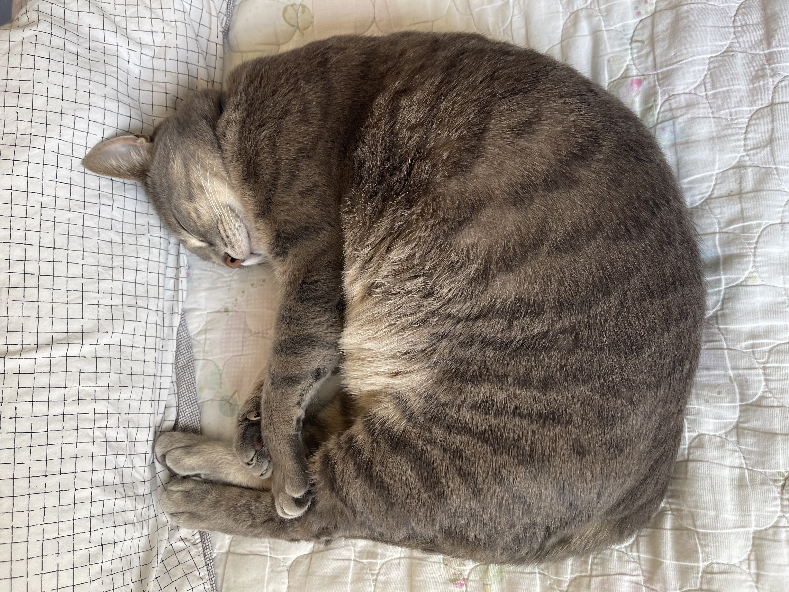

Help cats and dogs find loving homes!
Animal shelters have a surplus of both cats and dogs that are looking for permanent homes. Unfortunately, many of these shelters are active kill-shelters. Many of the animals there are often those that were lost, abandoned, given up by their previous owners, or rescue animals.
Adopting gives those animals another opportunity to have a safe, comfortable, and loving home. It can also be a great way to find a companion that matches your personality and lifestyle.
Shelters have animals of different ages, sizes, and personalities. This means that you can take your time finding a pet that is a good fit for you and your family.
Regardless of whether you choose to adopt or shop, caring for an animal means taking complete responsibility and making sure they are a permanent part of your family. A new pet needs more than just food and water. They need attention, exercise, veterinary care, and most importantly a safe environmnt to live in.
Cats and dogs can also need time to get comfortable in a new environment. Being patient can help them feel safe in their new home and trust you more.
Again, regardless of the process of getting a pet, it's important to realize that you are undertaking a massive responsibility. Due to this, it is important to think about your situation before adopting.
Not everyone is able to adopt a pet, but there are many other ways to help animals. People can volunteer at shelters, donate food or supplies, foster animals, or help spread information about pets that are looking for homes.
Fostering means temporarily caring for an animal until they can find a permanent home. This can help shelters while animals wait to be adopted. It can also often lead to surrounding people adopting them permanently as well.
When someone is ready for a new pet, adopting is an option they should consider. Shelters and rescue organizations have many animals that need homes, and adopting can give these animals another chance to have a family, instead of spending majority of their day locked in a kennel. Furthermore, buying a pet from a breeder also comes with ethical issues, as many of such breeders often neglect and abuse their pets. Many of which may not even end up on the market if not deemed "good enough" or kept for more breeding purposes. Many are caged and forced to reproduce artificially, such as instances of cross-breeding animals.
Every family and animal is different. The most important thing is making a responsible decision and making sure the animal will be properly cared for. Even with limited time, just having the resources to give a pet an open and safe space makes adopting a worth-while decision to make.
If you want to learn more about adopting a cat or dog, you can visit Adopt a Pet's pet adopting information page.
Visit the Adopt a Pet Adopting PageEvery animal deserves a safe and loving home!
